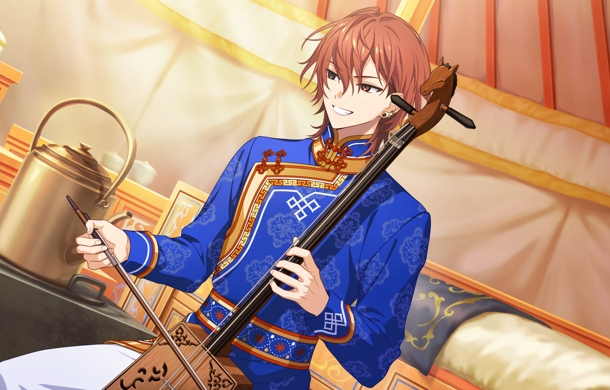
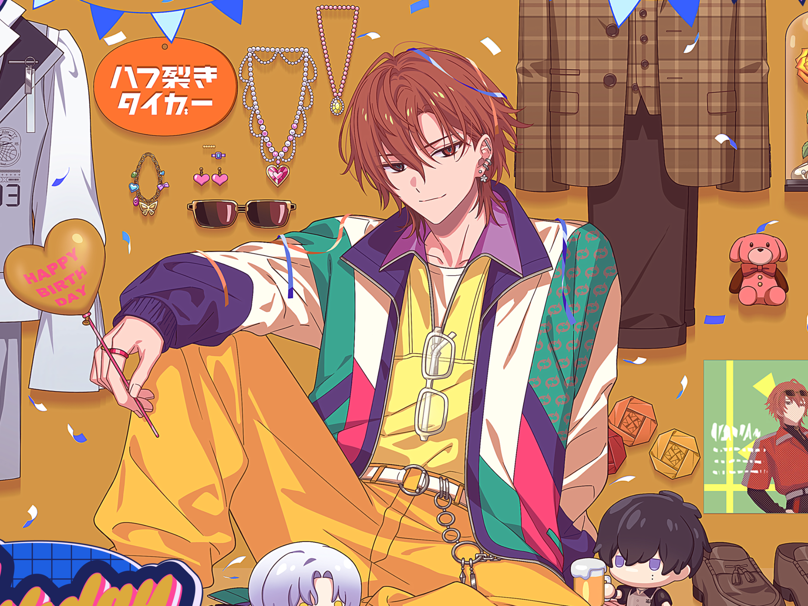

Головний герой повертається до рідного міста HAMA, щоб зустрітися з другом дитинства, Кафкою. Але, схоже, що той зник...

У межах програми HAMA Tours Ренґа й Акута вирушили у навчальну подорож до Монголії. Вражені безкраїми степами, вони не втримались від дуркування з місцевими тваринами — і випадково загубили ґіда. Тепер їм доведеться заночувати просто неба. Чи зможуть вони повернутися з краю, де температура між днем і ніччю стрибає на 30 градусів?!

текст текст